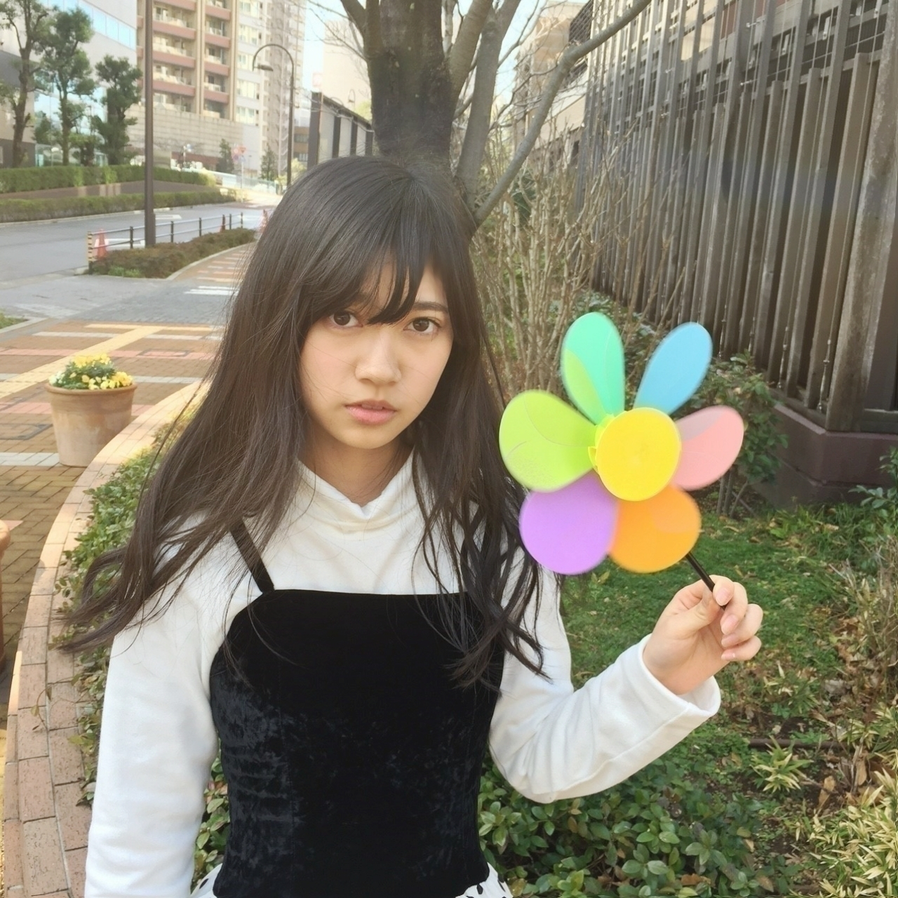
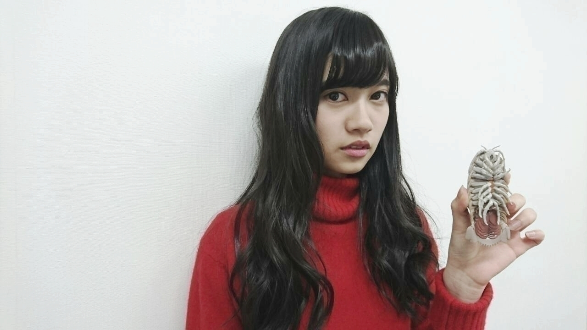
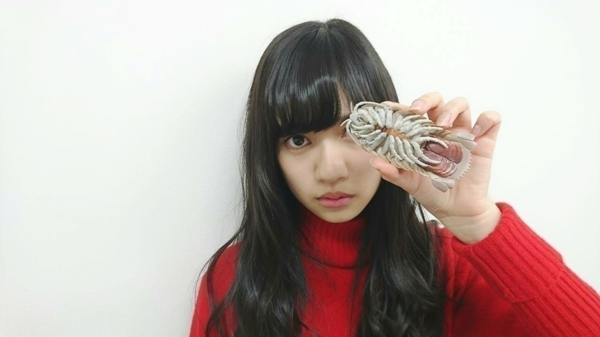
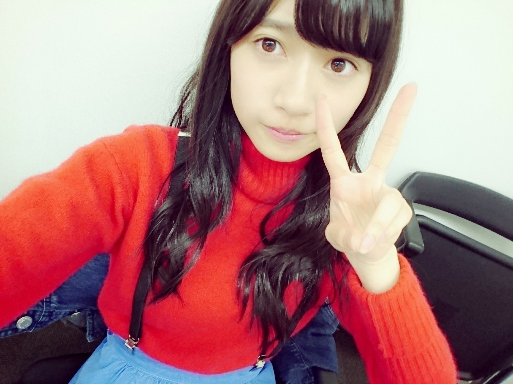
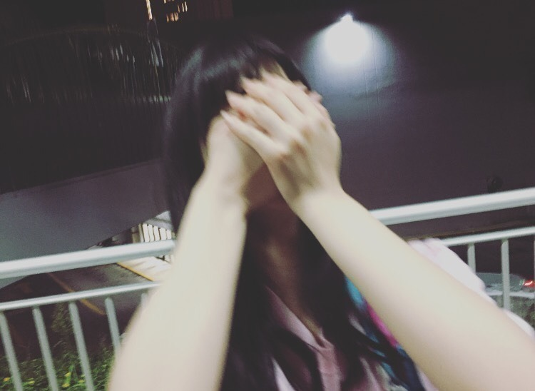
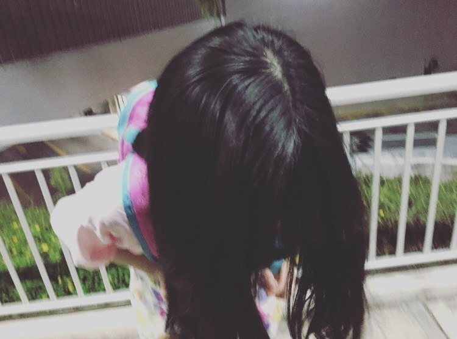
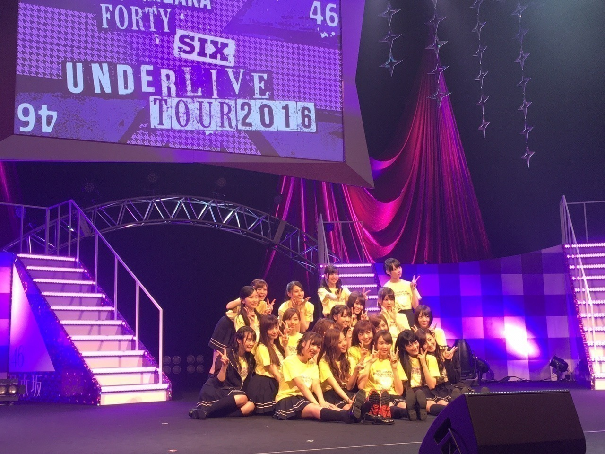
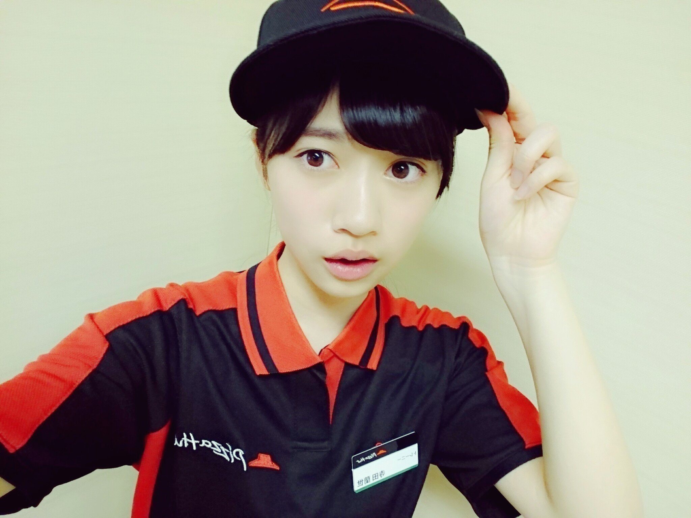
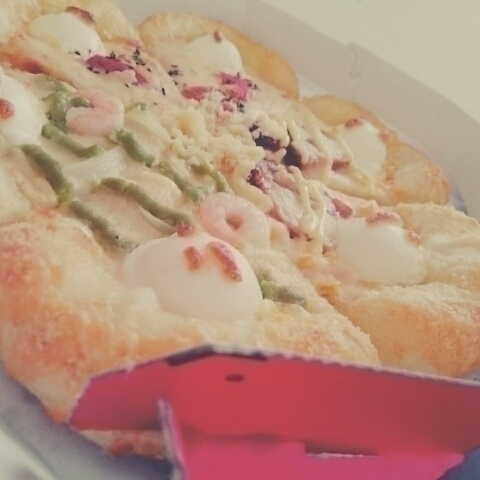
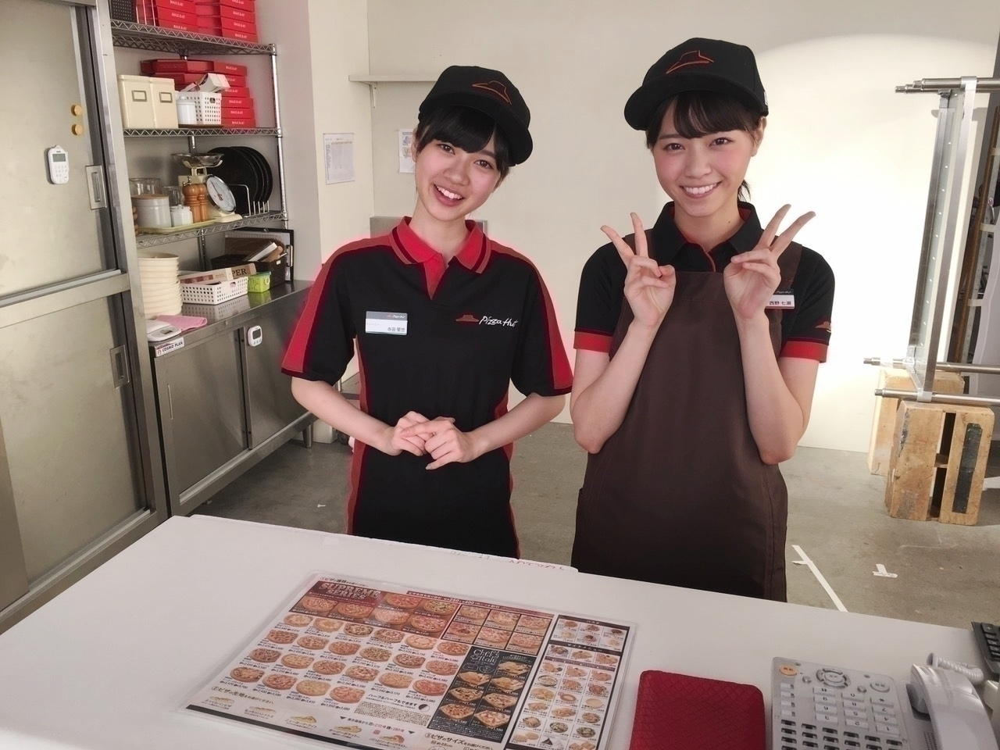

2016/0328Mon△私は2期生です△
2期生
お誕生日おめでとう✨
あまり知られてないと言いますか
2期生のお披露目日が
バラバラなので
いつが記念日なのか
よく分かりづらいとは
思いますが
私もオーディションに受かった日が記念日なのか
もしくは
お披露目された日が記念日なのか
迷いますが、、、
一応、本日3月28日が
最終オーディションの日でした
いまだにあのときの事は鮮明に覚えています(〇_〇)
オーディション
私はすごく楽しめました。緊張とか含めていままでもこれからも経験できないようなそんな言葉にできないくらい楽しかった思い出です！
昨日、3期生セミナーをやらせて頂いたのですが
（福岡のお話はまた次のブログにて\( ö )/）
セミナーをするにあたって
オーディション懐かしいなーっと色んな事を思い出しました。
オーディションで
私を見つけてくれて
ありがとう
乃木坂46と言うグループに出会えた事に凄く感謝してます
本当に奇跡と言いますか
運命だなって改めて思いました✨
これからも
今日モバメでは送りましたが
更に更にさらに更にさらに
私らしく頑張ってまいりますので
宜しくお願い致します！

2016-03-28
2016/03/28 23:24｜個別ページ｜コメント(1047)
2016/0323Wedハルジオン発売日不等号も宜 しくお願い致します！あと個人PV 皆の予告編見たけど面白かった中 元さんのPVの世界観最高ですあと 、みり愛のすき
あと、じゅんなのは
夜一人で観てたのですが
怖すぎて途中リタイアしましたw(:_;)w
そんな本日2016-03-23
ハルジオンが咲く頃
発売日です✨

────────────────
不定期に行われる企画
コメントありがとうございますの意味も込め
いつも1つ1つ大切に読んでます
これからも宜しくお願い致します✨
Tsuyoshi⊿ 様
Daiki 様
しゅーま 様
かいりゅう 様
トントン 様
てった 様
とことこ 様
れい 様
みき 様
ユーバリ@なおりんご軍団 様
巻山力樹 様
夢旅人 様
りくりく 様
メロンパン 様
美凪 様
カイム⊿ 様
こはく 様
未來 様
あつき 様
みく 様
ともやんやん 様
群馬のゆーま 様
KICKN 様
ガルボア 様
SENA 様
らいだー 様
とっしー 様
あつきん 様
パトラ 様
らん 様
ポール 様
しまったん 様
#アキ# 様
ゆきりん 様
空⊿義博 様
藤丸 様
ぷーたろ 様
乃木坂って、どこ中？ 様
きらきゅん 様
T-Hayase 様
三蔵 様
ユンみんご☆ 様
しまさん⊿ 様
きせきまる先輩 様
だいきーん 様
寺島 様
横浜のひろし 様
道端の小型犬 様
たくみ 様
ドイツからの乃木坂ファン 様
けんびー 様
栃木のすーさん 様
ユーヤ⊿ 様
風の服 様
黄色いウサギ 様
お市 様
永島優輝 様
ゆか*.(๓´͈ ˘ `͈๓).* 様
ケンケン 様
へいゆ〜 様
雲は白モヒカンは赤 様
りななん 様
こん 様
まほ⊿ 様
narutaka 様
りさりさ 様
ふみや 様
まさと 様
おがちゃん 様
かなかな 様
( ´ま`)まぁーさん 様
はくはる 様
コーエン14 様
てらっち 様
わらび 様
さやえんどう46 様
チャンク 様
Tada 様
匿名 様
ハヤ 様
健康のこうじ 様
だいず 様
sk 様
義将 様
とも2013 様
健康のけんじ 様
つぐ 様
服の袖が、ビリッと 様
アクシム 様
福ラッチ 様
yutaka 様
ユウキ⊿ 様
ラッキー7 様
まさ 様
ともお 様
leaf⊿ 様
ともちん 様
藤林／(・ x ・)＼ 様
あぎれ 様
わん吉 様
三歳のサイ◢ 様
自由人 様
よしと 様
torres◢ 様
つばき 様
だいきんまん 様
イッツ オール ライト 様
EL GANZAN 様
日村派はめずらしい 様
つばん 様
なかや 様
すず 様
天下人大内義興 様
わどぅー 様
spiaggia 様
☆かの☆ 様
夢の欠片の運人 様
テンプル 様
阿部ちゃん 様
ギターおじさん♪ 様
たかしツンツン 様
幸祈者no.13 様
マッキー 様
たむよし 様
れーとん 様
ピンクのNIXON@祐介 様
かめ⊿オレンジジュース 様
くろちょ 様
みひろくん。 様
ピロリ菌 様
わっきー 様
ミント 様
サファイア茄子 様
もとくん 様
まき 様
おくちゃん 様
ドロケイ 様
はやと 様
てぃもん 様
エラシコ 様
ゆうちゃん 様
ムトー 様
かむぃ 様
ほのみ⊿ 様
すっくん 様
林 様
ぬのりょん 様
プロスペクタ 様
よしゆう(*・ω・*) 様
あきひろ 様
ひめかつ 様
ゆーぴょん 様
くろちゃん(=ﾟωﾟ)ﾉ 様
ぬのりょう 様
nocchi 様
澤城茂 様
マナティ 様
けんびー 様
santa41 様
名古屋のしょ～やん 様
和⊿ 様
あゆか 様
ロドリゲス 様
きんじろう 様
こじこじ 様
rosarian親父 様
なひるあんどん 様
伴伴 様
万理華推しのなべりょ 様
Doppo 様
TAKAHIRO 様
おじちゃん？ 様
島根の悠ちゃん 様
岡山のきょ 様
red-comet 様
のぎるーむ⊿英Z 様
たかみき 様
サマツリ 様
づみ 様
せーお 様
まる 様
ゆう 様
テニス少年 様
なおぽん 様
とんちん 様
のっち⊿だいじょばない 様
ＴＭＡ△ 様
くろちょ 様
みひろくん 様
がぶりちゅう 様
（3.23 14：30までに反映されてた方までですあと、最近のブログのコメント1コメさんとかが毎回変わってるんですだから時間内にコメントしてても反映されてなかった方は抜けてると思います）
名前間違えてたらごめんなさいコピペではなく手打ちの為間違えて打っている可能性があります
ご了承くださいまし。
────────────────
コメント返し○
○蘭世ちゃんこんばんはです。
足大丈夫なんですか⁉️お大事に❗️あ！ピザハットのCM
見ました‼️七瀬も蘭世も大好きなんで超嬉しいです。
本当にピザハットにいないかなー笑
→ありがとうございます
ありがとうございます
ありがとうございます
ピザハットさんにね
居ないものかね
私もバイトとかした事ないから
体験してみたいなとは思うよ
○初コメ。
収録も休んだみたいだね
ゆっくり治してね、蘭世の個人PV良かった〜
ああいう仕事も向いてるんじゃない？（≧∇≦）
愛が止ま蘭世〜❤️
→初コメさんや！！！
ありがとうございます
これからも宜しくね
個人PVね
とりあえず
沢山の方に見てもらいたいけど
ボーダー組ご贔屓の方は見て欲しい
また、これについては書くね！！
いま話すとネタバレ感があるからw(:_;)w
研究生時代のときも
自分プロデュースで
他のメンバーの個人PVをとると言う企画がありましたが
このときは伊織を撮影したんだけど
凄く楽しかったです
今回も自分でその世界を作るということでしたが
やっぱり楽しかったので また、色んな形で
こういう事やりたいです！
○らんぜ最強〜〜！
俺もサッカーで捻挫なうです(T ^ T)
焦る気持ちすごい分かります！
でも安静にしておくのが1番早く治るからゆっくり治るのを待とう！
俺も頑張る！(*^^*)
→一緒だね、、、
そう、凄くもどかしい
そうだよね
焦ってもいい事ないw(:_;)w
ありがとう
お大事に！！！
次回ブログ
そろそろグアムブログ、、、
もう出来上がってるのに
世に出すのを躊躇してしまうw(:_;)w

では、またw(:_;)w
2016/0322Tueニンゲン
おはようございます
こんにちは
こんばんは
動きたい。

動きたいのに動けなくてもどかし過ぎて
ウォーってなってる
寺田蘭世です
────────
コメント返し○
○蘭世足大丈夫？たまにはゆっくりしてね！全力で応援するからね(๑>•̀๑)ﾃﾍﾍﾟﾛ
→ありがとう！
そうブログでは書いてないけど
実は、アンダーライブのラストスパートで捻挫しました
感動的なときに、、、
自分がうざ過ぎます
何人か気付いてコメン卜してくれた方いたので書きますが
ラストの
君の名のサビで合流したのですが
AメロもBメロも皆で歌いたかった、、、w(:_;)w
1分1秒が惜しいってすごく思った瞬間でありました
でもね、
アドレナリンって本当にあるんだなって実感しました。
東北ライブもあるので
しっかり治したいです
○らんぜ今晩は、捻挫したのかぁ、焦ってムリしても良い事無いよ。時には一休みも必要なのかな。テラダさんいつも全力疾走だからね(^_^)
→ごめんなさい
皆、本当にありがとうございます
w(:_;)w
○らりんの卒業かなしいよね、、
でもアイドルのオーディション受かった瞬間から卒業っていつかやってくるものだし蘭世もいつか卒業しちゃうと思うと悲しい、、
けど、それまでずっと応援してます！
がんばってね！
→コメントありがとうございます
始まりがあったら終わりもある
でも、始めなきゃ無だしね
だから、1日1日大切にしたいなって改めて思う。
○アンダーライブお疲れ様！
僕は遠征して、今帰りの新幹線の中だよ！
永島ロスやばくて、特に「僕がいる場所」が乃木坂の楽曲の中では一番好きだったんだけど、アンダラ行ったお陰で聴くと泣きそうになる(T_T)
最高のライブをありがとう！
アンダラはいつも期待以上のものを見せてくれるから本当に楽しい！
蘭世もパフォーマンス凄い良かった！
蘭世のダンス凄く好きだなって思って見てた！
→新幹線！！！
コメントありがとうございます
ホント乃木坂46にはたくさんいい曲があります
アンダーライブをやる度に
この楽曲も歌詞が深いなって思う楽曲沢山あります。
だからこそその素敵な歌詞を自分なりに解釈して
ダンスとかで表現するのはすごく楽しいです✨
アンダラはいつも期待以上
そう言ってもらえると嬉しいです
お越し頂き誠にありがとうございました
○本当に楽しいライブでした！ありがとうございました！！
→ありがとうございます✨
本当に嬉しい
こういう言葉を掛けてくれる方がいるから
次も頑張ろうって思えます
○お疲れ様です。
足の調子はどうですか？
遅くなってしまいましたが
「LARME」買ってきました！
これはおじさんが読むものではないですね
でも、
ファッション好きでブランドのコレクションとかよく見てるので、こういう女の子のファッション雑誌も読んでみるとなかなか興味深いですね。
最初パラパラとページめくってたら気づかなかったくらいいつもと雰囲気の違う蘭世でビックリ！
→コメントありがとうございます
LARMEわー
ありがとうございます
ありがとうございます
私も自分で本屋さんに行って買いました
父が私って気づかないで
白石さん出てるー
あ、飛鳥さんもいるねーって
読んでました
娘が出てるのに気づかなかったのかって、、、
言ったら
( ³ω³)ﾌｧｯ
え、これ( ³ω³)ﾌｧｯ
これ蘭世なの( ³ω³)ﾌｧｯ
ってなってました。笑
○頑張れよ寺田
→色々頑張る
ありがとうございます✨
○千秋楽でトロッコで永さんとチューしたって聞いたよ。
やっぱり「らりん、そこ代われ！！」
→そうなんです
千秋楽のラストスパートのロマンティックいか焼きでトロッコに乗れました
トロッコに乗りたいっていつかのブログに目標で書いてたからすごく嬉しかった
2階3階のお客さんを近くで確認できたのが嬉しかったし
私の推しタオルを持ってる方が昔より増えたことをまた実感出来ました
らりんさんにキスしてもらえた事と大好きーって言えたから満足✨
────────
コメントにも沢山捻挫への心配コメントありがとうございます
申し訳なさでいっぱいです
コレのせいで何件かお仕事に参加できなかったりする度
悔しい思いでいっぱいになります。
だからせめてもの思いで
ブログを書いています、、、|•_•`)
足冷やしながらブログのコメント読んでます
最後まで読んでくださり
ありがとうございました。

good night✨
2016-03-22
2016/0321Mon乃木坂 4 6
アンダーライブ

永島（さん）ロスです。笑
らりんさんがMCのときに
言ってた言葉
うん
ほんと終わった瞬間から
永島（さん）ロスです。
なんだかんだあっという間に
卒業の日を迎えてしまいました
武道館で発表された時は
まだまだ先の話だって
思っていました。
それで
ライブのリハーサル最中に
こうやってらりんさんや
このメンバーでライブやれるのは最後なんだって実感湧いてきて
正直、笑顔で送り出したい！って気持ちが大きかったけど
いざ本当に卒業してしまうってなったら
北野氏ばりに
らりんさん怒ってます状態に私もなったときもありました、、、
1日経って
改めてらりんさんと
乃木坂46として
お会いすることは一生出来ないんだって考えたら
心にぽっかり穴が開いた気持ちになりました。
昨日のライブでも
別れ際もっと好きになるを
披露した時も
この曲の立ち位置が
きいちゃんとらりんさんの
間からの抜けなのですが
らりんさんの後ろ姿を見て踊るのは最後なんだって
複雑な気持ちになりました。
ライブ始まる前の
声出しや円陣
もう、らりんさんの声を聞いてから
スタートするライブは昨日がラストでした
悲しいけど
らりんさんに会えて良かったです。
昨日は
自分でもビックリするくらい泣きました
でも、笑顔で送り出したいって思いの方が強かったから無理矢理でも頬を上げようって思ってたけど
最後までらりんさんらしい
お言葉のお陰で
泣き笑いできました:)
ありがとうございます
2016/0318Fri最高かよっ！！！！
店長西野さんとお写真

ピザハットさんにて
Web用動画
ウチの店長最高かよ！Vol.5に新人バイトさん役として出させて頂きました✨
モバイルメールでは
まだ解禁できないけど
凄く緊張したけど
はやく皆さんにお知らせしたいすごく嬉しいお仕事を
してきたよー
っとメールしたのですが
本当に凄いありがたいですし
ほんと初めての事だったので緊張しましたし
まだまだだなって所たくさんあるとは思いますが
何事も経験を重ねることが大切だと思います
今回を機に
また、いろんな活動をしていきたいなってチャレンジ精神もわきましたし
何より本当に嬉しかったです
私の家ではお祝い事とか記念日はpizzaをよく注文するので本当に嬉しかった
家族も喜んでくれましたし
ファンの方へも
こういう形でこれからも
恩返しとは違うかもですが
こういった喜び、嬉しいを
共有したいです。
本当に嬉しかったです
本当に嬉しかったです
本当に嬉しかったです
大切な事なので
3回言わせて頂きます(〇_〇)
ありがとうございます
皆様チェック宜しくお願い致します✨

新商品ごちそうチージーフラワーも試食させて頂きましたが
大変美味でした✨
また食べたい
みみまで美味しいし
見た目も
可愛いんですお花みたいで
春っぽいんです
パシャリ

あー
また食べたい
pizza最高かよっ！
イベント感想○
お茶会
似顔絵会
録音会が1日でありました
お茶会はみんな
真剣で可愛かったし
私自身もすごく楽しかったです
でも、テラダのお茶会=お紅茶だよねってファンの方に言われて
そうだよね
お茶会=お紅茶でお話し会も
テラダって感じでいいよね
っと思いました、、、(〇_〇)
似顔絵会は
我ながら上手くかけてると思います
似顔絵会昔から好きなんだ！！
よかったら似顔絵大切にして下さい
録音会は恥ずかしいけど
楽しい
色んなメンバーの聴けるのが楽しい
メンバーそれぞれの個性と言いますか
類は友を呼ぶってホントなんだなーって感じる(〇_〇)笑
これも私からのボイス間違えて消さないように
大切にして下さい！
どのイベントも凄く楽しかったです
楽しい時間を
ありがとうございました✨
お知らせ○
これまたすごく嬉しかったお仕事です
3月17日
LARMEさん発売中です
表紙は白石さんですよ✨
飛鳥さんと一緒に出てます
いつも読んでる雑誌の1つだったのでまさか自分が出させて頂くなんて
びっくりでした
これもまたすごくいい経験になりましたし
なにより、可愛いお洋服を着れたり
普段しないメイクは
新鮮でした✨
また、オフショットは
今度載せます
3月23日
14枚目シングル
ハルジオンが咲く頃発売日です✨
めでたい
3月24日
B.L.T.さん
カナさんと撮影しました
カナさんみたいなお姉さん欲しかったなって思った
カナさんにも妹欲しかったーって言ってもらえたの
嬉しかった
ぜひ、宜しくお願い致しますペロ
4月1日
Seventeenさん
まだ詳細言っていいのかわからないのですが
こちらもお楽しみにです✨
アンダーライブ○
明日から名古屋で
アンダーライブ全国ツアースタートします
緊張してます
今が一番緊張してるかもです|•_•`)
うう|•_•`)
頑張ります
楽しみます
らりんさん大好き